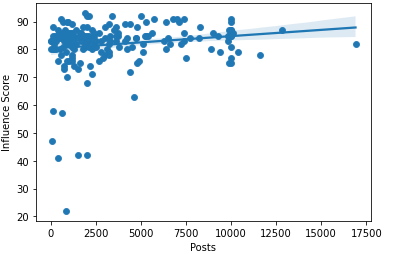

Influencers have had important roles during the 21st century, they literally make stuff popular, but what type of stats make an influencer into a INFLUENCER.Is there a positive, statistically significant correlation between the number of followers an influencer has and their influence score?Their is a positive collaration bewteen followers and influence score, the PCC is %0.365.Is there a positive, statistically significant correlation between the average likes an influencer has on a post and their influence score? Their is a positive influence score bewteen influencers and average likes, the PCC is 0.048.Is there a positive, statistically significant correlation between the total number of likes an influencer has and their influence score? their is a positive colleration bewteen total likes and influencer score, the PCC is %0.234.Is there a positive, statistically significant correlation between the number of posts an influencer has made and their influence score? Their is a positive collarations bewteen total posts and influencer score, PCC is 0.168. Why should you give a crap, you should give a crap because all of these stats make you popular, if you have a negative correlation, your not gonna be an influencer. This means influencers have to work extra hard to put out good content daily and follower experience that keeps the like average from going down, Moral of the story, DONT BE AN INFLUENCEER WHEN YOU GROW UP!
